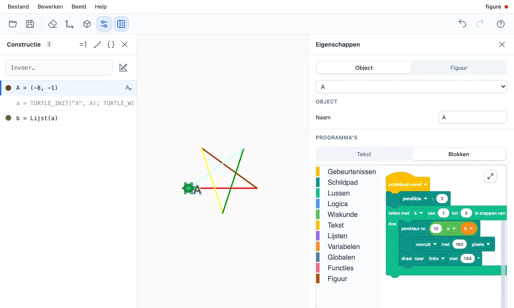

Uitdrukkingen en schuifknoppen
Uitdrukkingen
Elke regel die geen punt en geen opdracht is, maakt een uitdrukking, linksboven getoond met twee decimalen. De soort volgt uit de tekst:
| Regel | Soort |
|---|---|
a = 3,
lijst = [1, 2, 3]
|
constante |
t = "Hallo" |
tekst |
f = 0.5x^2 - 4 |
functie van x (y, z, t); f(2) roept
haar aan, f'(2) haar afgeleide
|
f(x) = ax^2 + bx + c |
kromme van de functie, getekend:
ax wordt gelezen als a x, de
schuifknoppen a, b, c worden gemaakt; ook
f(2) roept haar aan
|
E = d(A, B) |
meting, herberekend als de figuur beweegt |
u = "AB = " + round(d(A, B)*100)/100
|
berekende tekst |
In een formule staat een punt voor zijn coördinaten, een lijnstuk voor zijn lengte, een cirkel voor zijn straal, een veelhoek voor zijn oppervlakte, een hoek voor zijn grootte. Volledige syntaxis: Formules en programma’s.
Een uitdrukking verplaats je door haar tekst te slepen; aan een punt gekoppeld volgt ze dat punt. Aantikken selecteert haar, of schrijft haar naam tijdens een invoer.
Schuifknoppen
r = Schuifknop(0, 5, 2): van 0 tot 5, waarde 2. De
grenzen mogen uitdrukkingen of formules zijn (Schuifknop(0, d(A, B), 1)). Stap, lengte, richting, knop en animatie stel je in bij de
eigenschappen.
r = 5 maakt er weer een constante van.
Een onbekende naam die met een kleine letter begint, maakt een
schuifknop van −5 tot 5, met stap 0,1 en waarde 1:
A = (a, 4), d = y = m x + p. Een
Griekse letter maakt een hoek van 0 tot 360°, met stap 1° en
waarde 45° (van 0 tot 2π in radialen): P = (3; α).
Een geweigerde regel houdt zijn schuifknoppen niet.
Berekende punten
-
M = (x(B) + 1, y(A)): coördinaten gegeven door formules. -
N = Punt(2*B - A): een formule waarvan de waarde een punt is. -
P = (3; 60°): poolcoördinaten, straal en hoek.
Is de waarde van een regel naam = formule een punt
of een lijst van punten, dan bieden knoppen achteraan de regel
Punt,
Lijst van punten,
Lijst van lijnstukken of
Uitdrukking aan.
Enter neemt de opgelichte knop: punt of lijst bij een
naam met hoofdletter, anders uitdrukking. Vandaar
lijst = [1, 2, 3] en niet
L = [1, 2, 3], dat als een punt in de ruimte
gelezen zou worden.
Lijsten van punten
q = Lijst(pts) tekent de punten van de uitdrukking
pts; een niet-gedefinieerd punt onderbreekt de
lijn. Een geselecteerde uitdrukking waarvan de waarde een lijst
van punten is, biedt ook en
aan in de contextzone (en
bij een punt als waarde): de
regel wordt geschreven en de uitdrukking verborgen.
Rijen
L = Rij((k, k^2), k, -2, 2) plaatst de punten (k,
k²) voor k van −2 tot 2, met stap 1; een vijfde argument geeft
een andere stap. Het element kan ook een getal zijn,
Lijnstuk(P, Q), Rechte(P, Q),
Cirkel(O, r) of Veelhoek(A, B, C, …),
waarvan de argumenten formules in k zijn:
Rij(Cirkel(A, k), k, 1, 3).
Een rij kan een andere bevatten, waarvan de grenzen de variabele
van de eerste lezen:
Rij(Rij((i, j), j, 1, i), i, 1, 4). In een formule
wordt een lijst van punten via haar naam gelezen, vanaf 0:
L[0], L[k-1],
L[i][j] voor geneste rijen,
L.length voor het aantal elementen. Schrijf
2*i: 2i is een complex getal.
Programma’s
Een uitdrukking kan een programma zijn: instructies gescheiden
door ;, waarvan de laatste de waarde geeft; het kan
andere objecten opmaken (S1.setHidden(1)). Taal:
Formules en programma’s.
- (kop van het paneel „Constructie”) opent een leeg programma; Maken of Ctrl Enter maakt de uitdrukking.
- Bij een bestaande uitdrukking bewerkt de sectie Definitie van de eigenschappen de tekst over meerdere regels: Enter behoudt het inspringen, Tab springt in, } springt uit, Ctrl Enter past toe, Esc herstelt, Opmaken springt in volgens de accolades.
- Een fout selecteert de foute regel of het niet-gepaarde scheidingsteken.
Blokken en schildpad
Een programma kan ook met blokken: de sectie Definitie schakelt van Tekst naar Blokken. Blokken sleep je uit de categorieën (Lussen, Logica, Wiskunde, Tekst, Variabelen, Globalen, Functies, Figuur) en klik je onder het blok programma; een blok geef … terug geeft de waarde. Elke wijziging werkt meteen en wordt ongedaan gemaakt zoals de andere. Tekst en blokken tonen hetzelfde programma: de keuze blijft voor de volgende.
Globalen, die alle programma’s van de figuur delen, maak je in de categorie Globalen met Globale maken…; een programma stelt ze in, verhoogt ze of leest ze.
Schildpad, in de contextzone van een punt, maakt de schildpad die vanuit dat punt vertrekt en opent hem in blokken. Hij gaat vooruit (in pixels of eenheden), draait (in graden), heft of laat de pen zakken, verandert van kleur en dikte, vult, schrijft, draait naar een punt of gaat erheen. Zijn tekening, een lijst, volgt het punt en de objecten die het programma leest. Zolang zijn programma getoond wordt, staat de schildpad getekend waar hij eindigt, in zijn richting gedraaid (in 3D een pijl, groen als zijn bovenkant naar je toe wijst): elk toegevoegd blok toont hem vooruitgaan of draaien.

De schildpadden van DGPad-figuren openen op dezelfde manier: met
het eigenschappenpaneel open, tik je hun regel
blk_turtle_exp_… aan in het paneel ‘Constructie’.
Een programma met een instructie zonder blok blijft tekst.
De knoppen van DGPad-figuren (een label gevolgd door een pijl) voeren hun programma uit wanneer je de pijl aanraakt. Het label aanraken selecteert de knop, het slepen verplaatst hem; Instellingen, in de contextzone, opent zijn programma in blokken. Het blok stel … in op van de categorie Figuur verandert de waarde van een uitdrukking.
Schildpadden en knoppen maak je ook via het gereedschapsmenu,
familie Programma's:
Schildpad vertrekt van het geselecteerde punt
(een lege plek maakt er een),
Knop komt op de geselecteerde plek; elk opent
meteen zijn programma in blokken. Getypt in de invoerregel maakt
Knop("Uitvoeren") een knop in het midden van de
weergave; zijn regel in het paneel ‘Constructie’ verandert zijn
label.